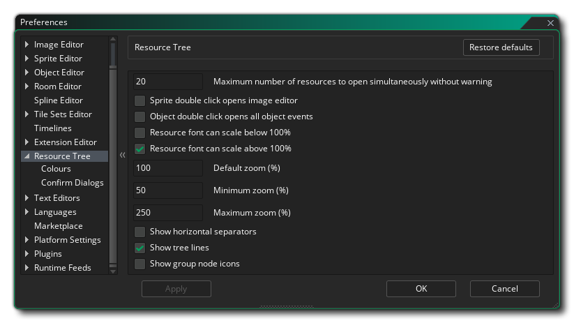
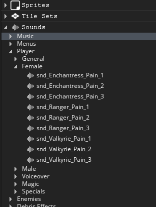

Die Ressourcenbaumeinstellungen werden verwendet, um bestimmte Eigenschaften für die Funktionsweise des Ressourcenbaums und seiner Elemente zu definieren. Die wichtigsten Optionen sind:
- Maximale Anzahl gleichzeitig geöffneter Ressourcen ohne Warnung: Sie können mehrere Ressourcen gleichzeitig zum Öffnen auswählen
 /
/  +
+  um sie auszuwählen und dann mit der rechten Maustaste
um sie auszuwählen und dann mit der rechten Maustaste  und alles offen zu wählen. Wenn Sie mehr als die in dieser Option angegebene Anzahl ausgewählt haben, wird eine Warnung angezeigt, da zu viele Ressourcen gleichzeitig geöffnet werden können, was zu Problemen mit der Leistung auf untergeordneten Maschinen führen kann. Der Standardwert ist 20.
und alles offen zu wählen. Wenn Sie mehr als die in dieser Option angegebene Anzahl ausgewählt haben, wird eine Warnung angezeigt, da zu viele Ressourcen gleichzeitig geöffnet werden können, was zu Problemen mit der Leistung auf untergeordneten Maschinen führen kann. Der Standardwert ist 20. - Sprite Doppelklick öffnet Bild-Editor: Standardmäßig Doppelklick Auf jeder Ressource wird diese Ressource zum Bearbeiten geöffnet. Wenn Sie jedoch mit Sprites arbeiten, öffnen Sie sie nach der Ersteinrichtung beim Erstellen der neuen Ressource, um das Bild und nicht die Sprite-Eigenschaften zu bearbeiten. Wenn Sie diese Option auswählen, wird der Bildeditor für die Sprite-Ressource anstelle der Sprite-Ressource selbst geöffnet. Sie können den Sprite-Editor weiterhin öffnen, indem Sie mit der rechten Maustaste klicken und wählen Sie Eigenschaften öffnen. Diese Option ist standardmäßig deaktiviert.
- Objekt-Doppelklick öffnet alle Objektereignisse: Standardmäßig Doppelklick Auf jeder Ressource wird diese Ressource zum Bearbeiten geöffnet. Wenn Sie jedoch mit Objekten arbeiten, öffnen Sie sie nach der Ersteinrichtung beim Erstellen der neuen Ressource, um nur die Ereignisse und nicht die Objekteigenschaften zu bearbeiten. Durch Auswahl dieser Option werden die verschiedenen Objektereignisse in einem neuen Arbeitsbereich geöffnet, wobei jedem Ereignis ein eigener Tab innerhalb des neuen Arbeitsbereichs zugewiesen wird. Sie können den Objekteditor weiterhin öffnen, indem Sie mit der rechten Maustaste klicken und wählen Sie Eigenschaften öffnen. Diese Option ist standardmäßig deaktiviert.
- Die Ressourcenschriftart kann unter 100% skaliert werden: Wenn Sie diese Option auswählen und anschließend die Größenskala der Ressourcenelemente ändern, können Sie GameMaker Studio 2 die Textgröße sowie die Symbolgröße für Elemente im Ressourcenbaum verringern, wenn diese auf weniger festgelegt sind als 100%. Standardmäßig ist dies deaktiviert und der Text des Ressourcenbaums wird nur vergrößert und nicht verkleinert.
- Die Ressourcenschriftart kann über 100% skaliert werden: Wenn Sie diese Option auswählen und dann die Größenskala der Ressourcenelemente ändern, können Sie GameMaker Studio 2 erzwingen, die Textgröße sowie die Symbolgröße für Elemente im Ressourcenbaum zu erhöhen als 100%. Standardmäßig ist dies auf und Ressourcenbaum Text vergrößert.
- Standardzoom (%): Legt den Standardzoomprozentsatz für den Ressourcenbaum fest, wenn Sie ein neues Projekt starten. Der Standardwert ist 100%.
- Minimaler Zoom (%): Dies legt den minimalen Zoomwert fest, der für den Ressourcenbaum zulässig ist. Standard ist 50%.
- Maximaler Zoom (%): Hier wird der maximale Zoom-Wert festgelegt, der für den Ressourcenbaum zulässig ist. Standard ist 250%.
- Horizontale Trennzeichen anzeigen: Hier können Sie die horizontalen Trennzeichen zwischen verschiedenen Asset-Typen im Ressourcenbaum aktivieren / deaktivieren. Dies ist standardmäßig aktiviert, um die Trennzeichen anzuzeigen.

- Baumlinien anzeigen: Hier können Sie die Baumlinien aktivieren / deaktivieren, die neben der Ressource im Ressourcenbaum angezeigt werden. Dies ist standardmäßig aktiviert, um die Baumlinien anzuzeigen.
- Gruppenknotensymbole anzeigen: Aktivieren oder deaktivieren Sie die Symboldarstellung für jeden Ressourcentyp, der neben dem Ressourcennamen angezeigt wird. Dies ist standardmäßig deaktiviert.
Hier können Sie das von GameMaker Studio 2 verwendete Farbschema beim GameMaker des Ressourcenbaums ändern. Dieser Abschnitt ist in die folgenden drei Gruppen unterteilt:
- Hintergrund:
In diesem Abschnitt können Sie die Hintergrundfarbe für die wichtigsten Asset-Knoten im Ressourcenbaum festlegen. Wenn Sie auf eine davon klicken, wird der Farbwähler geöffnet, in dem Sie die Farbe und das Alpha auswählen können, die mit der allgemeinen IDE-Farbe für den Knoten gemischt werden sollen. Der Standardwert von jedem ist $FFFFFFFF.
- Symbol:
In diesem Abschnitt können Sie die Farbe und das Alpha für die Ordnersymbole festlegen, mit denen die verschiedenen Ressourcenstruktur-Asset-Typen bezeichnet werden. Der Standardwert von jedem ist $FFFFFFFF. Beachten Sie, dass Sie diese Symbole nicht sehen, wenn Sie den Alpha-Wert auf 0 setzen.
- Etikett:
Das "Label" ist der Text, der verwendet wird, um den Knoten oder das Element im Ressourcenbaum zu beschreiben oder zu benennen, und hier können Sie die Farbe des Textes sowie die Schriftart und das Design ändern, die dafür verwendet werden sollen. Sie sollten zunächst die Standardeinstellungen ändern, um eine Basis für alle Ressourcenbaumknoten zu erstellen, und dann die einzelnen Knotenbeschriftungseinstellungen nach Bedarf bearbeiten (beachten Sie, dass alle mit "Standard verwenden" ausgewählt sind).
- Verschiedene Optionen: Diese Optionen wirken sich auf bestimmte globale Farbeigenschaften für den Ressourcenbaum aus:
- Horizontale Trennfarbe: Die Farbe des Balkens, der jeden diskreten Ressourcentyp in der Struktur trennt. Die Standardfarbe ist $3E3E3EFF.
- Baumgrenze Farbe: Die Farbe, die verwendet wird, um die Baumlinien zwischen verschiedenen Ressourcenknoten zu ziehen. Die Standardfarbe ist $666666FF.
- Knotenauswahlmarkierung: Dies ist die Farbe, die verwendet wird, um ausgewählte Knoten innerhalb des Ressourcenbaums hervorzuheben. Die Standardfarbe ist $039D5BFF.
Hier können Sie das Verhalten der Bestätigungsdialoge beim Arbeiten mit einer Ressource aus dem Ressourcenbaum auswählen. Die verfügbaren Optionen sind:
- Automatische Reaktion auf Ressourcenlöschung: Wenn Sie eine Ressource aus dem Ressourcenbaum löschen, erhalten Sie normalerweise eine Warnung, in der Sie gefragt werden, ob Sie sicher sind, dass Sie fortfahren möchten. Wenn Sie diese Option auf "OK" setzen, wird die Nachricht unterdrückt, als ob Sie auf die Schaltfläche "OK" geklickt hätten, um fortzufahren. Der Standardwert ist "Nachricht anzeigen".
- Automatische Antwort beim Öffnen mehrerer Ressourcen: Wie oben in den allgemeinen Einstellungen der Ressourcenstruktur erwähnt, können Sie beim Öffnen mehrerer Ressourcen gleichzeitig aus der Ressourcenstruktur eine Warnung erhalten, wenn die Anzahl die angegebene Anzahl überschreitet. Wenn Sie diese Option auf "OK" setzen, wird die Warnung unterdrückt, als ob Sie auf die Schaltfläche "OK" geklickt hätten, um fortzufahren. Der Standardwert ist "Nachricht anzeigen".
- Automatische Reaktion auf das Setzen eines Zimmerelternteils über den Knoten ziehen: Wenn Sie einen Raum über einen anderen Raum im Ressourcenbaum ziehen und dann freigeben, wird Ihnen eine Nachricht angezeigt, in der Sie gefragt werden, ob Sie den Raum zu einem "Kind" des Zimmers machen möchten fiel auf. Wenn Sie diese Option auf "OK" setzen, wird die Warnung unterdrückt, als ob Sie auf die Schaltfläche "OK" geklickt hätten, um fortzufahren. Der Standardwert ist "Nachricht anzeigen".
- Automatische Reaktion beim Löschen benutzerdefinierter Ansichten: Wenn Sie eine benutzerdefinierte Ressourcenbaumansicht erstellt und anschließend gelöscht haben, wird eine Meldung angezeigt, in der Sie gefragt werden, ob Sie die Ansicht fortsetzen und entfernen möchten. Wenn Sie diese Option auf "OK" setzen, wird die Warnung unterdrückt, als ob Sie auf die Schaltfläche "OK" geklickt hätten, um fortzufahren. Der Standardwert ist "Nachricht anzeigen".
- Automatische Antwort auf DnD™ -Konvertierung in GameMaker Sprache: Wenn Sie die Option zum Konvertieren eines DnD™ -Knotens in GML auswählen, werden Sie aufgefordert, die Änderung zu bestätigen, da dies nicht rückgängig gemacht werden kann. Wenn Sie diese Option auf "OK" setzen, wird die Warnung unterdrückt, als ob Sie auf die Schaltfläche "OK" geklickt hätten, um fortzufahren. Der Standardwert ist "Nachricht anzeigen".